บทความความรู้งานพิมพ์
รวม 50 บทความจากประสบการณ์กว่า 40 ปีของทีมงานโรงพิมพ์ ครบทุกเรื่องที่คนสั่งพิมพ์ควรรู้
 ไฟล์ & Artwork
ไฟล์ & Artworkส่งไฟล์ยังไงไม่ให้เพี้ยน — 5 ความผิดพลาดที่ทำให้งานพิมพ์ออกมาไม่ตรงปก (และวิธีป้องกัน)
5 ข้อผิดพลาดยอดฮิตที่ทำให้งานพิมพ์ออกมาไม่ตรงกับที่คาดไว้ ตั้งแต่ส่ง RGB แทน CMYK ไม่ทำ Bleed ไปจนถึงไม่ตรวจ Proof ก่อนพิมพ์ — ป้องกันได้ทั้งหมดก่อนส่งไฟล์
อ่านบทความ → เทคโนโลยี & เทรนด์
เทคโนโลยี & เทรนด์แนวโน้มการออกแบบสิ่งพิมพ์ในปี 2026
คาดการณ์แนวโน้มของการออกแบบ Design Artwork วัสดุ เทคโนโลยี ของสื่อสิ่งพิมพ์ในปี 2025
อ่านบทความ → ธุรกิจ & การตลาด
ธุรกิจ & การตลาดในยุคที่ Online ครองเมือง ทำไม โบรชัวร์ & แคตตาล็อก ถึงยังเป็นอาวุธลับปิดการขายที่ได้?
สมัยนี้คนที่ทำธุรกิจทุกคนต้องยิงโฆษณา Facebook, Tiktok หรือทำ SEO แต่มีคำถามที่ทุกคนสงสัยก็คือ “เรายังจำเป็นต้องพิมพ์โบรชัวร์ หรือทำเล่มแคตตาล็อกอยู่ไหม? ยังมีความจำเป็นอยู่หรือไม่?
อ่านบทความ → ธุรกิจ & การตลาด
ธุรกิจ & การตลาดCost 101: ทำไมพิมพ์เยอะยิ่งคุ้ม (เศรษฐศาสตร์งานพิมพ์)
วิชาเศรษฐศาสตร์แบบเข้าใจง่ายๆ สำหรับคนทั่วไป ราคาต่อใบ = (ต้นทุนคงที่ ÷ จำนวนที่พิมพ์) + ต้นทุนต่อใบ
อ่านบทความ → กระดาษ
กระดาษวิธีเลือกกระดาษให้เหมาะกับงานพิมพ์ของคุณ
การทำงานพิมพ์แต่ละประเภทออกมาให้ดี กระดาษไม่ใช่แค่ พื้นหลังของภาพ หรือข้อความ แต่มันคือ ส่วนนึงของประสบการณ์ที่แบรนด์จะมอบให้กับลูกค้า
อ่านบทความ → ธุรกิจ & การตลาด
ธุรกิจ & การตลาดแจกฟรี! 🎁 ไอเดีย Packaging น่ารัก ที่ทำให้ลูกค้ารักแบรนด์คุณ
ในยุค Internet ที่มีร้านค้า Online เต็มไปหมด การทำให้ลูกค้าประทับใจตั้งแต่แรกเห็น ตั้งแต่เริ่มแกะกล่องจึงกลายเป็นกลยุทธ์ที่หลายแบรนด์ใช้กัน
อ่านบทความ → ไฟล์ & Artwork
ไฟล์ & Artworkวิธีเตรียมไฟล์งานพิมพ์ให้สมบูรณ์แบบ
การเตรียมไฟล์งานที่ถูกต้อง เป็นขั้นตอนสำคัญที่จะช่วยให้งานออกมาสวยงาม ตรงตามที่ต้องการ ประหยัดเวลาในการแก้ไข ช่วยลดปัญหาความผิดพลาดและช่วยเพิ่มความสมบูรณ์แบบให้กับงานพิมพ์มากยิ่งขึ้น
อ่านบทความ → ความรู้ทั่วไป
ความรู้ทั่วไปตัวอย่างและรายละเอียดปฎิทินแขวน
ช่วงนี้กำลังมีดราม่า สำนักงานประกันสังคมนั้นใช้งบประมาณไปผลิตปฏิทินประมาณ 450 ล้านบาท
อ่านบทความ → ไฟล์ & Artwork
ไฟล์ & Artworkการใช้ AI มาช่วยจัด Layout Artwork ของงานสิ่งพิมพ์
ปัจจุบันมีการใช้เทคโนโลยี AI มาช่วยงานในธุรกิจในหลายภาคส่วน รวมถึงงานจัด Artwork layout โบว์ชัวร์ ใบปลิว หนังสือ ของธุรกิจสิ่งพิมพ์ด้วย โดยโปรแกรมที่สามารถนำช่วยงานได้มีดังต่อไปนี้
อ่านบทความ →
เทคโนโลยี & เทรนด์แนวโน้มการออกแบบสิ่งพิมพ์ในปี 2025
คาดการณ์แนวโน้มของการออกแบบ Design Artwork วัสดุ เทคโนโลยี ของสื่อสิ่งพิมพ์ในปี 2025
อ่านบทความ → ธุรกิจ & การตลาด
ธุรกิจ & การตลาดทำไมราคาหนังสือแพงขึ้น?
จากข่าวของ กรุงเทพธุรกิจ https://www.bangkokbiznews.com /business/business/1146947?anm ที่ราคาหนังสือแพงขึ้น ราคาส่วนใหญ่เริ่มต้นที่ 400 – 500 บาท หากเป็นราคา 100 – 200 บาท ก็จะมีจำนวนหน้าน้อยลงเยอะ
อ่านบทความ → เทคนิคการพิมพ์
เทคนิคการพิมพ์ประโยชน์และวิธีการใช้ Pantone ที่ถูกต้อง
Pantone เป็นระบบจับคู่สีมาตรฐานที่ใช้ในหลากหลายอุตสาหกรรม ทั้งการพิมพ์ การออกแบบ Graphic แฟชั่น และการผลิตสินค้าต่างๆ ซึ่งสร้างขึ้นโดย บริษัท Pantone Inc. โดยมีวัตถุประสงค์เพื่อให้แน่ใจว่า กระบวนการผลิตจะมีคุณภาพสีอย่างส
อ่านบทความ → ไฟล์ & Artwork
ไฟล์ & Artworkวิธีแก้ปัญหาสระเด้ง/ลอย ให้ถูกต้อง
จากภาพเฟซบุ๊ก Napapach Luenchavee ที่โพสภาพป้ายร้านอาหารจีน ที่มีภาษาไทย Font Tahoma ที่มีสระเด้ง ไปอยู่ผิดที่ ทำให้อ่านและแปลความหมายผิดได้
อ่านบทความ → เทคโนโลยี & เทรนด์
เทคโนโลยี & เทรนด์มุมมองทางประวัติศาสตร์ในอุตสาหกรรมการพิมพ์
วิวัฒนาการของสื่อสิ่งพิมพ์
อ่านบทความ →
เทคโนโลยี & เทรนด์การใช้ AI ในอุตสาหกรรมการพิมพ์
ปัจจุบันปัญญาประดิษฐ์ (AI) และเทคโนโลยีระบบอัตโนมัติกำลังปฏิวัติอุตสาหกรรมสื่อสิ่งพิมพ์เป็นอย่างมาก ทั้งใช้เพื่อการเพิ่มประสิทธิภาพ ลดต้นทุน และคุณภาพที่ดีขึ้น ต่างๆ ดังตัวอย่างต่อไปนี้
อ่านบทความ →
เทคโนโลยี & เทรนด์การใช้เทคโนโลยี AR และ Interactive ในสื่อสิ่งพิมพ์
เทคนิกการทำงานของ AR ในสื่อสิ่งพิมพ์ โดยปกติผู้ใช้งานจะใช้ smart phone และ tablet ที่มี App AR เพื่อ scan บนสื่อสิ่งพิมพ์เพื่อเปิดเนื้อหา Digital ขึ้นมา
อ่านบทความ →
ธุรกิจ & การตลาดการใช้สื่อสิ่งพิมพ์เพื่อสร้างเอกลักษณ์ของแบรนด์
ในการทำธุรกิจในยุคปัจจุบันต้องมีการสร้างแบรนด์เพื่อทำการตลาด ยิ่งสร้างแบรนด์ได้ดี มีเอกลักษณ์เป็นจดจำ โดดเด่นก็จะยิ่งทำให้ยอดขาย และกำไรกลับมาให้ธุรกิจได้มากขึ้น โดยการใช้สื่อสิ่งพิมพ์เพื่อสร้างเอกลักษณ์ของแบรนด์มีดังต่อ
อ่านบทความ →
เทคนิคการพิมพ์การพิมพ์เพื่อความปลอดภัย (Security Printing) คืออะไร?
การพิมพ์เพื่อความปลอดภัย คือการป้องกันการปลอมแปลงและการฉ้อโกง เป็นส่วนสำคัญของอุตสาหกรรมการพิมพ์ที่มุ่งเน้นทางด้านความปลอดภัยต่างๆ เข้ากับวัสดุการพิมพ์ เพื่อป้องกันการปลอมแปลงและการฉ้อโกง
อ่านบทความ →
เทคโนโลยี & เทรนด์อนาคตของการเทคโนโลยีสิ่งพิมพ์
ความก้าวหน้าของเทคโนโลยีสมัยใหม่ที่กำลังกำหนดภูมิทัศน์ของอุตสาหกรรมการพิมพ์ ซึ่งเทคโลโนยีมีดังต่อไปนี้
อ่านบทความ →
เทคนิคการพิมพ์เทคนิคการตัดไดคัทและปั๊มนูน
การไดคัท (Die-Cutting) เป็นการใช้เครื่องมือพิเศษหรือแม่พิมพ์ เพื่อตัดกระดาษหรือวัสดุอื่นๆ ให้เป็นรูปทรงที่ต้องการ โดยมีเทคนิคไดคัทแบบต่างๆ เช่น การตัดแบบจูบ (kiss-cutting) เป็นการตัดผ่านวัสดุแค่บางส่วน และการตัดทะลุ (thr
อ่านบทความ →
ธุรกิจ & การตลาดพลังของบรรจุภัณฑ์ทางการตลาด
พลังของบรรจุภัณฑ์ทางการตลาด (The Power of Packaging in Marketing) เป็นเครื่องมือทางการตลาดที่สำคัญสำหรับธุรกิจ โดย
อ่านบทความ →
เทคโนโลยี & เทรนด์การใช้ AR ในอุตสาหกรรมการพิมพ์
ในปัจจุบันมีการนำเทคโนโลยีมาใช้ในอุตสาหกรรมการพิมพ์หลายอย่าง โดยเทคโนโลยี Augmented Reality (AR) เป็นนวัตกรรมที่รวมโลกทางกายภาพของสื่อสิ่งพิมพ์ เข้ากับเนื้อหาดิจิทัลเชิงโต้ตอบของเทคโนโลยี AR ซ้อนทับองค์ประกอบที่สร้างโดยค
อ่านบทความ →
เทคโนโลยี & เทรนด์การพิมพ์ที่ยั่งยืน (Sustainable Printing) คืออะไร?
การพิมพ์ที่ยั่งยืน (Sustainable Printing) คือการพิมพ์ที่เป็นมิตรกับสิ่งแวดล้อม โดยใช้วิธีการและวัสดุที่เป็นมิตรต่อสิ่งแวดล้อมตลอดกระบวนการพิมพ์ เพื่อลดผลกระทบต่อสิ่งแวดล้อมจากกิจกรรมการพิมพ์
อ่านบทความ →
เทคโนโลยี & เทรนด์นวัตกรรมใหม่ของธุรกิจสิ่งพิมพ์
เทคโนโลยีในธุรกิจสิ่งพิมพ์มีการพัฒนาโดยตลอด ต่อไปนี้เป็นตัวอย่างนวัตกรรมใหม่ๆในธุรกิจสิ่งพิมพ์
อ่านบทความ →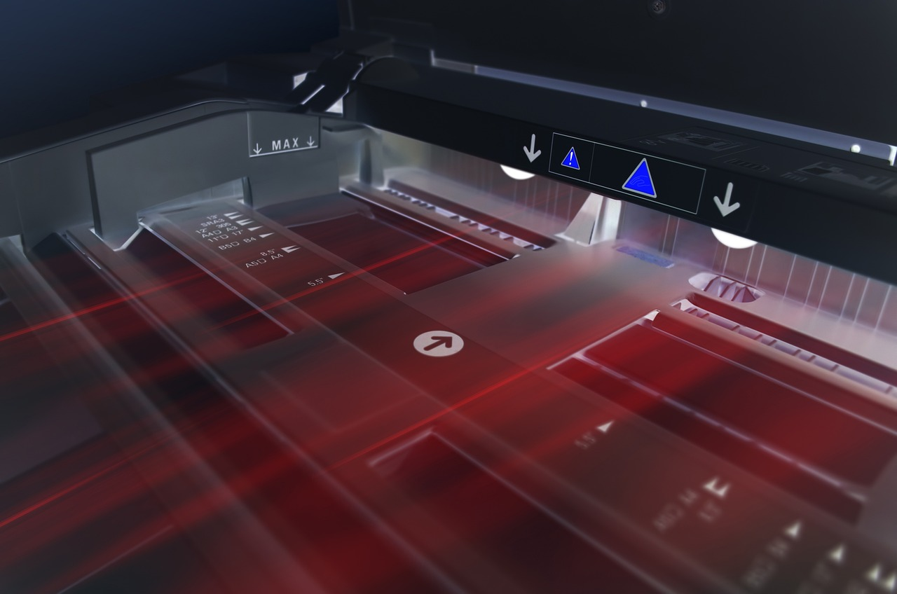
เทคนิคการพิมพ์การพิมพ์ดิจิทัล (Digital Printing) คืออะไร?
เป็นวิธีการพิมพ์สมัยใหม่ ที่เกี่ยวกับการถ่ายโอนไฟล์ดิจิทัล ไปยังวัสดุสิ่งพิมพ์ต่างๆโดยตรง เช่น กระดาษชนิดต่างๆ ผ้า และอื่นๆ
อ่านบทความ →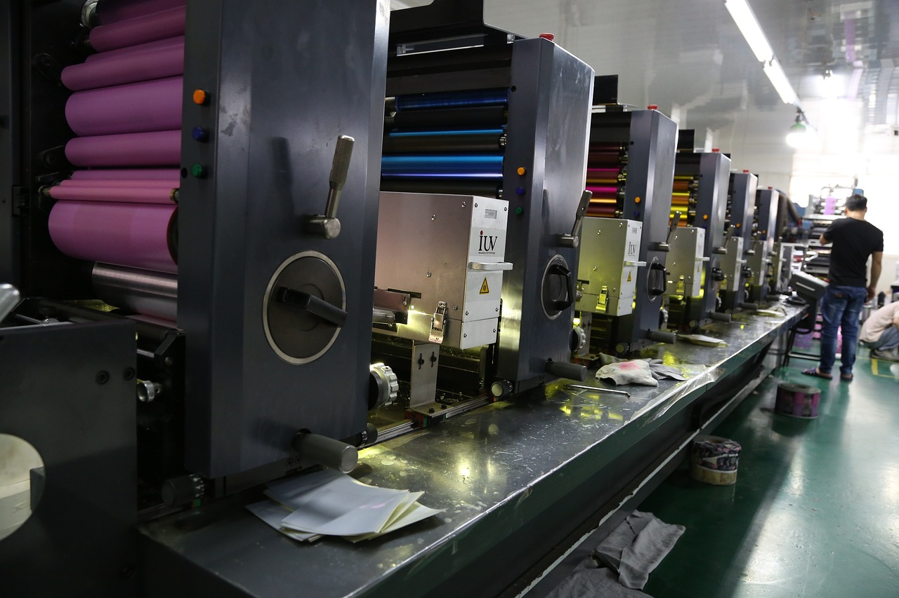
เทคนิคการพิมพ์การพิมพ์ออฟเซ็ท (Offset Printing) คืออะไร?
เป็นเทคนิคการพิมพ์ที่ใช้กันอย่างแพร่หลายในการผลิตสิ่งพิมพ์คุณภาพสูงในปริมาณมาก
อ่านบทความ → เทคนิคการพิมพ์
เทคนิคการพิมพ์คำแนะนำในการออกแบบ ฟอนต์ สี และการจัดรูปแบบของสื่อสิ่งพิมพ์
การออกแบบฟอนต์ สี และการจัดรูปแบบสำหรับสื่อสิ่งพิมพ์จำเป็นต้องได้รับการพิจารณาอย่างรอบคอบเพื่อให้อ่านง่าย ดึงดูดสายตา และสื่อสารได้อย่างมีประสิทธิภาพให้ตรงกับกลุ่มเป้าหมายให้มากที่สุด
อ่านบทความ →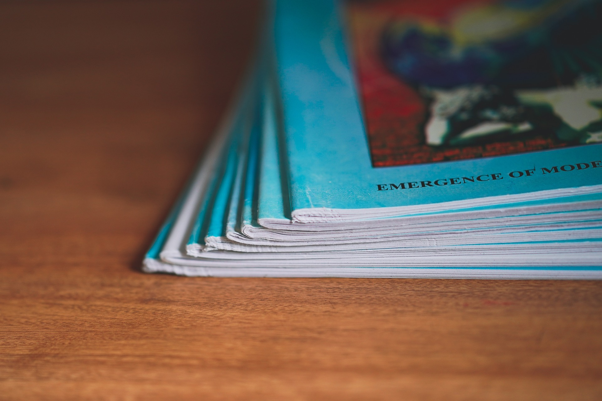
เทคนิคการพิมพ์สาเหตุของปัญหา รอยขีดข่วน บนงานพิมพ์เกิดจากอะไร
ปัญหารอยขีดข่วน บนงานพิมพ์เป็นปัญหาที่พบเห็นได้บ่อย ทั้งรอยขนแมว เป็นรอยขีดข่วนเป็นเส้นๆ ทำให้ตัวอักษร รูปไม่ชัดเจน หรือหายไปเลยก็มี ซึ่งสาเหตุก็มาจากหลายอย่าง
อ่านบทความ → กระดาษ
กระดาษชนิดของกระดาษใช้ทําบิลมีอะไรบ้าง
ประเภทของกระดาษที่ใช้ในการออกบิลต่างๆ เช่น ใบแจ้งหนี้ ใบเสร็จรับเงิน และเอกสารธุรกรรมอื่นๆ โดยทั่วไป ประเภทกระดาษที่ใช้ทำบิล ได้แก่
อ่านบทความ →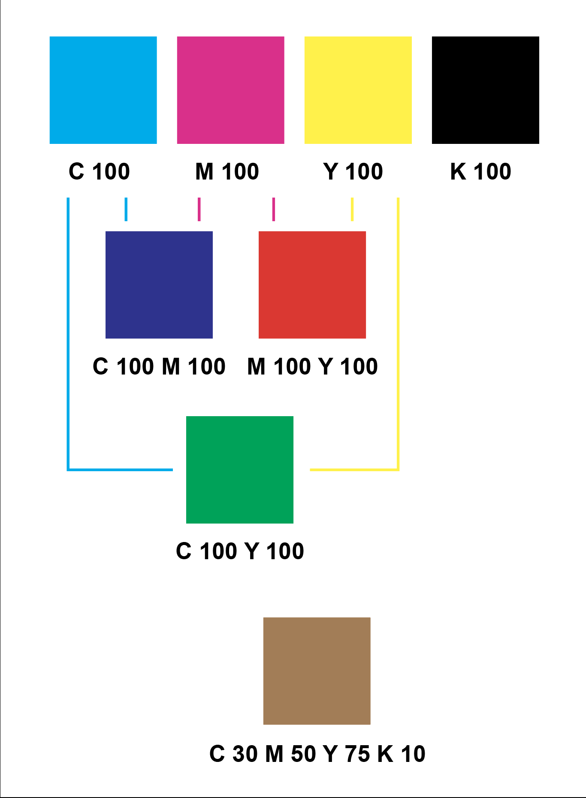
เทคนิคการพิมพ์ความรู้เกี่ยวกับทฤษฎีการผสมสี CMYK
โดยอย่างที่รู้ สี CMYK ย่อมาจาก Cyan (สีฟ้า), Magenta (สีชมพู), Yellow (สีเหลือง) และ Key (สีดำ)
อ่านบทความ →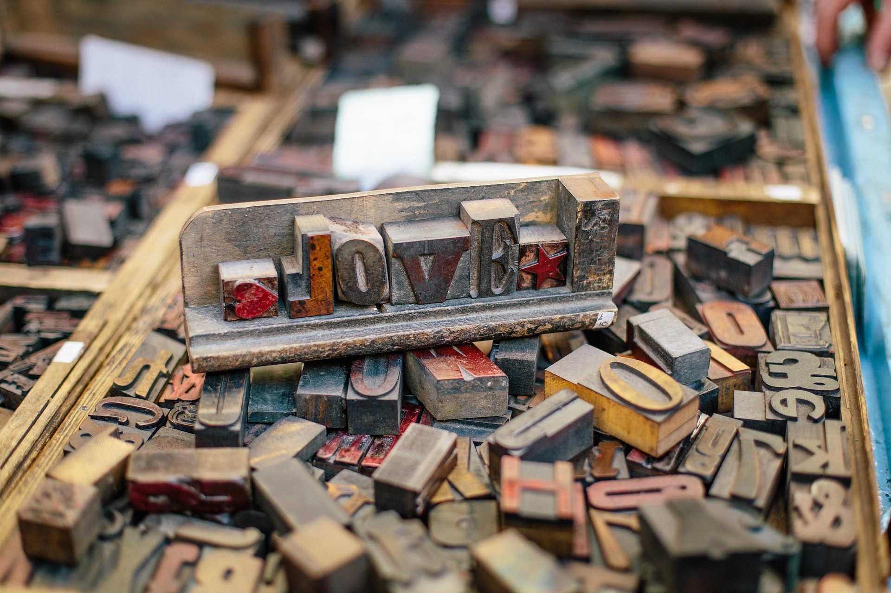
เทคนิคการพิมพ์เทคนิคการพิมพ์แบบพิเศษ
การพิมพ์แบบพิเศษ (Specialty Printing) คือการการใช้เทคนิคการพิมพ์ที่หลากหลาย นอกเหนือจากกระบวนการพิมพ์ 4 สีแบบมาตราฐาน
อ่านบทความ → ธุรกิจ & การตลาด
ธุรกิจ & การตลาดขั้นตอนหลักๆ ในการทำสิ่งพิมพ์ประเภทต่างๆ
ในงานสิ่งพิมพ์ นอกจากงานโปรโมทการขายที่สำคัญแล้ว ก็จะมีขั้นตอนการพิมพ์ของงานแต่ละชนิดที่แตกต่างกันไป
อ่านบทความ → กระดาษ
กระดาษขนาดอัตราส่วนของกระดาษ A B C ANSI
ขนาดกระดาษตามมาตรฐาน ISO 216 แบ่งออกเป็น 4 ชุด ดังนี้
อ่านบทความ → ความรู้ทั่วไป
ความรู้ทั่วไปปัญหาที่พบบ่อยในงานสิ่งพิมพ์
งานสิ่งพิมพ์เป็นงานที่มีขั้นตอนเยอะ และมีความละเอียดอ่อนมาก ทำให้บ่อยครั้งที่ งานพิมพ์ออกมามีปัญหา ทั้งงานพิมพ์แบบ Digital และ Offset เลย โดยปัญหาที่พบบ่อยครั้งก็คือ
อ่านบทความ →วิธีการสร้างแบรนด์ให้แข็งแกร่งโดยใช้สื่อสิ่งพิมพ์
การสร้างแบรนด์ที่ดี จะสร้างความแตกต่างให้กับธุรกิจ ช่วยให้โดดเด่นในตลาดที่มีการแข่งขันสูงได้ แบรนด์ที่แข็งแกร่งยังสร้างความภักดีให้กับลูกค้า แล้วมีแนวโน้มที่ลูกค้าจะกลับมาซื้อซ้ำกับแบรนด์ที่พวกเขารู้สึกผูกพันด้วย
อ่านบทความ → ความรู้ทั่วไป
ความรู้ทั่วไปวิธีการออกแบบสื่อสิ่งพิมพ์ให้มีประสิทธิภาพ
การออกแบบสื่อสิ่งพิมพ์สามารถทำได้ หลากหลาย ตามใจของเจ้าของธุรกิจ หรือที่ลูกค้าอยากทำ แต่การออกแบบให้มีประสิทธิภาพและได้ผลตามที่ต้องการ ต้องคำนึงถึงข้อสำคัญเหล่านี้ด้วย
อ่านบทความ →ท่ามกลางเทรนด์ของสื่อดิจิตอล ทำไมสื่อสิ่งพิมพ์ถึงยังมีความจำเป็นอยู่
ในยุคดิจิตอลปัจจุบันประโยชน์ของการตลาดสิ่งพิมพ์ถูกมองข้ามไป แต่ก็ยังวิธีที่มีประสิทธิภาพและมีคุณค่าในการเข้าถึงลูกค้าและ ทำให้ธุรกิจของคุณเติบโตได้ ซึ่งประโยชน์ของสื่อสิ่งพิมพ์มีดังต่อไปนี้
อ่านบทความ → ไฟล์ & Artwork
ไฟล์ & Artworkเทคนิคการทำไฟล์ Artwork ส่งโรงพิมพ์ Offset ให้ราคาถูกลง
การทำ Artwork ส่งโรงพิมพ์ Offset ที่ต้องมีการทำเพลทและจ้างช่างพิมพ์ประจำเครื่องนั้น จะมีต้นทุนในการทำมากกว่า การพิมพ์ Digital ที่เป็นแบบ On demand ดังนั้น การทำ Artwork ที่เหมาะสม ก็จะช่วยประหยัดเงินไปได้ส่วนนึง
อ่านบทความ →การเข้าเล่มหนังสือมีทั้งหมดกี่ชนิด
ในการพิมพ์หนังสือ นอกจากต้องทำการเขียนเนื้อหา ออกแบบ Artwork และพิมพ์งานออกมาแล้ว ต้องมีการเข้าเล่มหนังสือ (Binding) ด้วย โดยการเข้าเล่มหนังสือที่นิยมกัน มีทั้งหมด 5 แบบได้แก่
อ่านบทความ → กระดาษ
กระดาษสื่อสิ่งพิมพ์โฆษณากระดาษ โบร์ชัวร์ ใบปลิว มีกี่ชนิด อะไรบ้าง?
สื่อสิ่งพิมพ์โฆษณาชนิดกระดาษ มีหลากหลายชนิด ที่ส่วนใหญ่คนทั่วไปจะเรียกว่า โบร์ชัวร์ ใบปลิว โดยจะแบ่งออกเป็น 5 ชนิด
อ่านบทความ →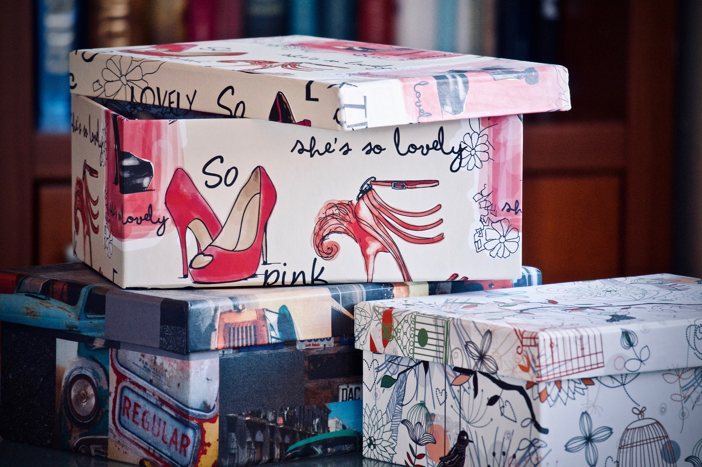
กระดาษกระดาษที่นิยมนำมาผลิตกล่องมีกี่ชนิด?
กระดาษที่นำมาผลิตกล่อง มีอยู่หลายชนิดทั้ง เนื้อกระดาษ สี ความหนา ราคาต่างกัน โดยแบ่งได้เป็น 5 ชนิด
อ่านบทความ →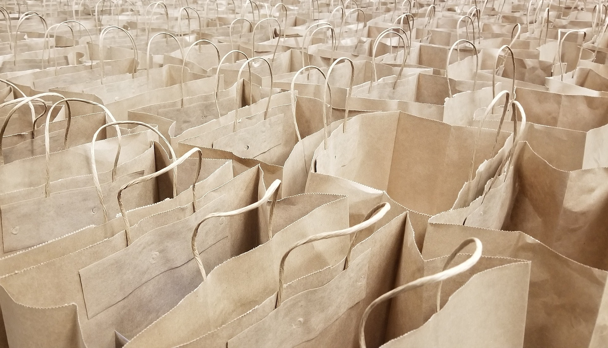
กระดาษกระดาษที่นิยมนำมาทำถุงมีกี่ชนิด
กระดาษที่นำมาใช้ในผลิตถุงของสิ่งพิมพ์ จะมีหลายแบบ ซึ่งมีคุณสมบัติแตกต่างกันขึ้นอยู่กับวัสดุที่นำมาใช้ จะมีความแข็งแกร่ง ทนทาน รับน้ำหนักสินค้าได้แตกต่างกัน โดยส่วนใหญ่จะแบ่งได้เป็น 3 ชนิด
อ่านบทความ → ไฟล์ & Artwork
ไฟล์ & Artworkนามสกุลไฟล์ ที่ใช้ในงานพิมพ์แต่ละชนิดแตกต่างกันยังไง
ตามที่เคยอธิบายไฟล์ jpg และ pdf ไว้ใน Blog : ใช้โปรแกรมไหน ทำ Artwork ส่งโรงพิมพ์ดี วันนี้จะมาอธิบายรายละเอียดของ นามสกุลไฟล์แต่ละชนิด เพิ่มเติม โดยจะแยกเป็น 2 ประเภท คือ แบบที่แก้ไขไม่ได้ และแบบที่แก้ไขได้
อ่านบทความ →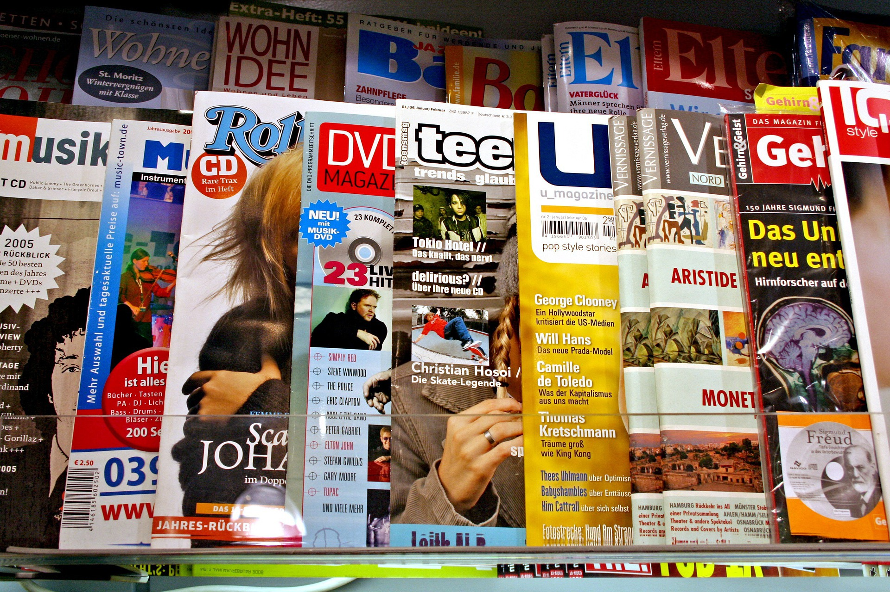
เทคนิคการพิมพ์การเคลือบสิ่งพิมพ์ (Coating Method) แต่ละชนิดมีอะไรบ้าง
การเคลือบสิ่งพิมพ์ คือการเอางานพิมพ์ไปเคลือบด้วยน้ำยาชนิดต่างๆ เพื่อให้ของเราออกมาดูดี และสวยงาม คงทนมากยิ่งขึ้น โดยแบ่งออกเป็นแต่ละชนิดตามนี้
อ่านบทความ →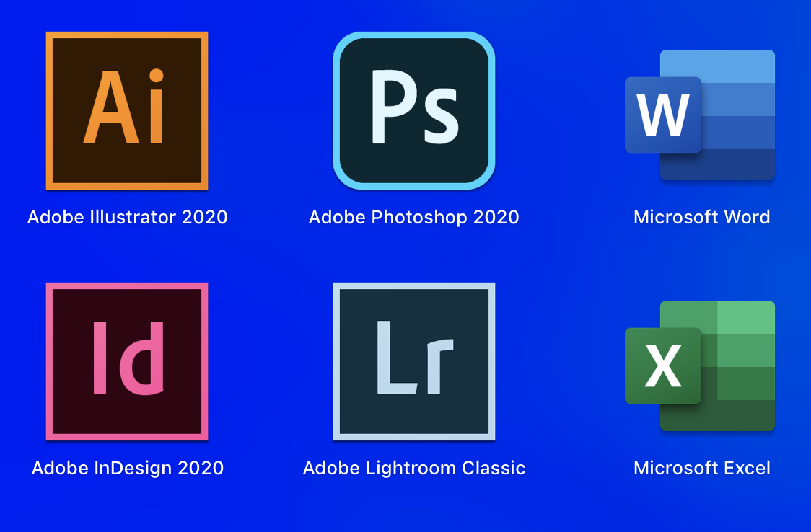
ไฟล์ & Artworkใช้โปรแกรมไหน ทำ Artwork ส่งโรงพิมพ์ดี
ซึ่งการใช้โปรแกรมไหนถึงจะดีที่สุดในการทำ Artwork ส่งโรงพิมพ์ น่าจะขึ้นอยู่กับหลายปัจจัย
อ่านบทความ →ชนิดของกระดาษ ที่ใช้ในงานพิมพ์
กระดาษปอนด์ (Pond Paper) เป็นกระดาษเนื้อเรียบสีขาว ความหนากระดาษที่นิยมใช้พิมพ์หนังสืออยู่ที่ 70-100 แกรม นิยมใชพิมพ์งานสีเดียว หรือพิมพ์สี่สีก็ได้แต่ไม่สวยเท่ากระดาษอาร์ต สามารถเขียนได้ง่ายกว่าทั้งปากกา และดินสอ ราคาไม่
อ่านบทความ →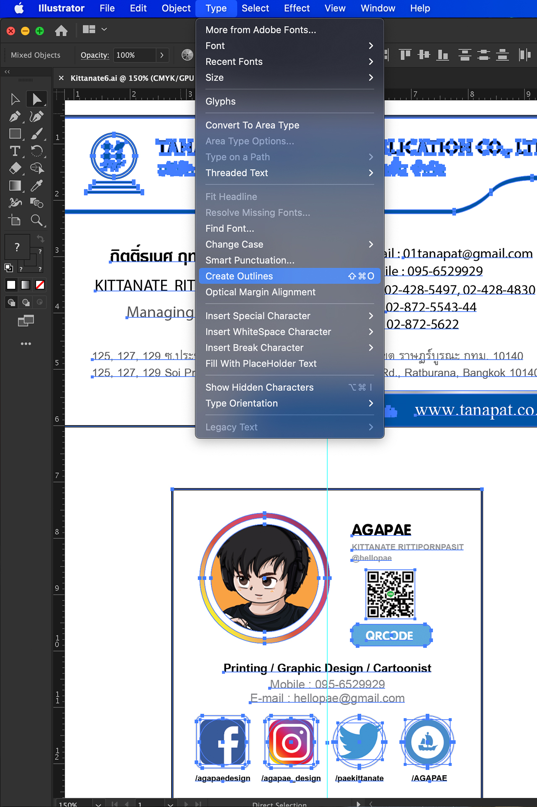
ไฟล์ & Artworkส่ง Files Artwork ให้โรงพิมพ์อย่างไร ให้ไม่มีปัญหา
ปัญหาส่วนใหญ่ที่เจอเวลา ลูกค้าส่ง files Artwork มาที่โรงพิมพ์ก็คือ Fonts เด้ง หรือ Fonts หาย ปัญหานี้เกิดจากเครื่อง Computer ที่โรงพิมพ์ไม่มี Fonts ที่ใช้ใน Artwork ทำให้เกิดปัญหาได้
อ่านบทความ →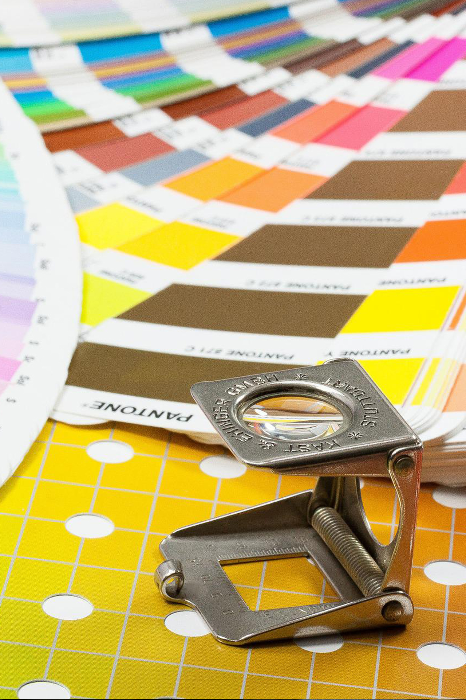
เทคนิคการพิมพ์ระบบสี CMYK กับ RGB ต่างกันอย่างไร
โดยระบบสี RGB ย่อมาจาก R (Red) : สีแดง G (Green) : สีเขียว B (Blue) : สีน้ำเงิน โดย 3 สีนี้จะเป็น แม่สีพื้นฐานของอุปกรณ์ Digital ทั้งหลาย เช่น TV Website กล้องถ่ายภาพ กล้องมือถือ
อ่านบทความ → ความรู้ทั่วไป
ความรู้ทั่วไปความแตกต่างระหว่างโรงพิมพ์ OFFSET และ DIGITAL
อย่างแรกจะเป็นเรื่องของต้นทุน และกำลังในการผลิตที่ส่งผลให้ งานสิ่งพิมพ์ที่ทำออกมาขายให้ลูกค้า มีความแตกต่างกัน
อ่านบทความ →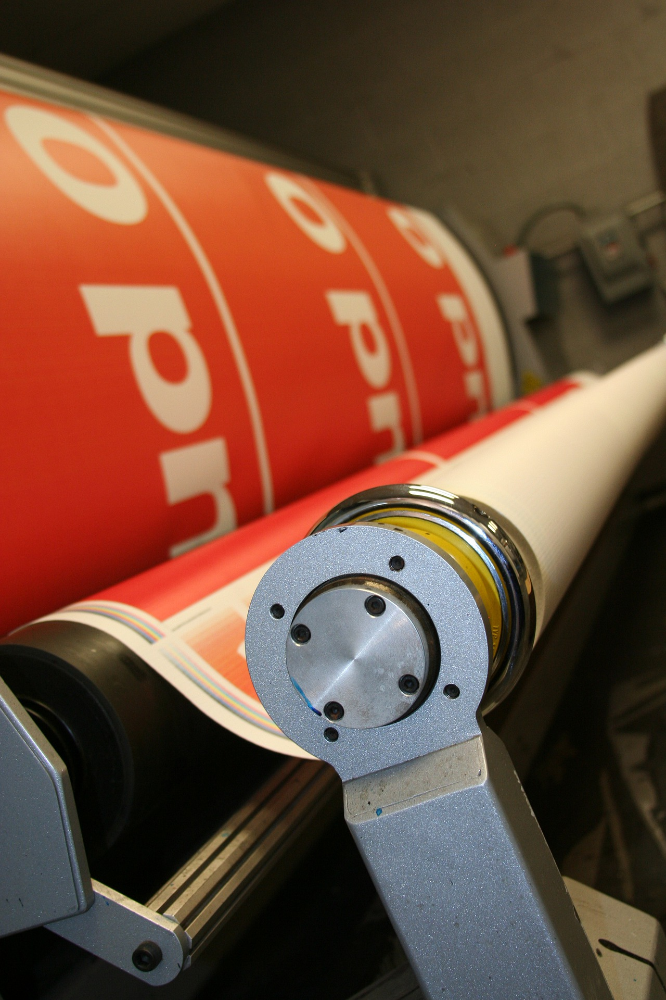
กระดาษขนาดของกระดาษตามระบบ ISO
ซึ่งเป็นระบบเมตริก จะกำหนดรหัส A0 ให้มีขนาดพื้นที่เท่ากับ 1 ตารางเมตร จากการคำนวณจะได้ขนาดของ A0 เท่ากับ 841 x 1189 มิลลิเมตร
อ่านบทความ →